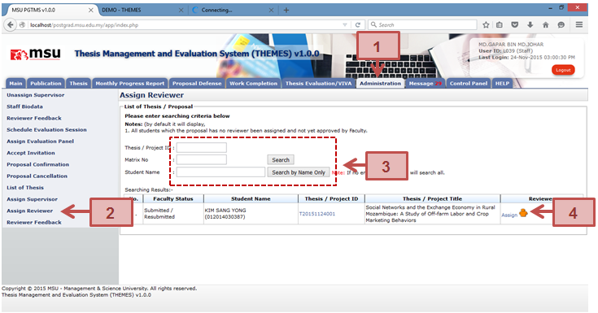
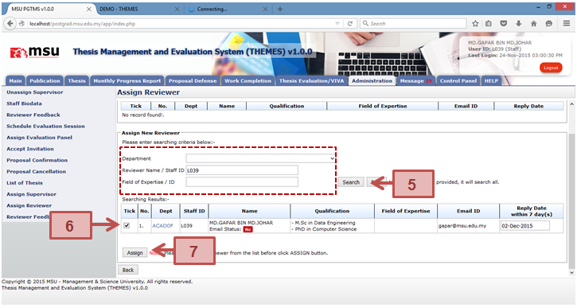
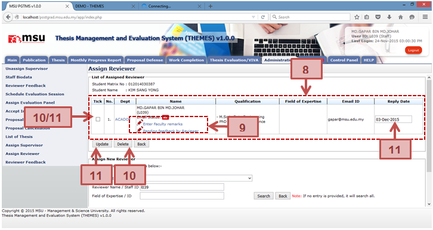

Figure 28: Assign Reviewer
Prerequisite
Student submit new thesis proposal
Steps
- Click on the Administration tab on the Top Panel section.
- Click on the Assign Reviewer menu on the Left Panel section. The list of thesis proposal will be displayed on the Working Area section.
- Enter the searching criteria if to search specific result or just click on the Search button to search general result.
- The list of student will be displayed on the table. Find the student and click the Assign/Change link to assign the Reviewer to the student. The Assign link indicates the staff is yet to be assigned as Reviewer. The Change link indicates the staff is already assigned as Reviewer.
- The Assign Reviewer page will be displayed. Enter the searching criteria if to search specific result or just click on the Search button to search general result
- The list of staff will be displayed on the table. Find the staff; change the default Reply Date if it is needed, and tick the respective checkbox.
- Click on the Assign button to assign the staff as reviewer to the student.
- The selected Reviewer will be populated into the list.
- Enter the specific remarks for this Reviewer (if any) via the Enter Faculty remarks link.
- If you want to delete the Reviewer, tick the checkbox. It can be in multiple rows. Click the Delete button to delete the Reviewer from the list.
- If you want to update the Reply Date, change it, tick the checkbox and click the Update button to save the change.
Next Action
The Reviewer is to review and provide the feedback.
Warning
System will prompt a notification message if the Student
- Submit the amendment without confirm all the required changes.
- Resubmit the amendment
Note
None
Created with the Personal Edition of HelpNDoc: Easily create CHM Help documents